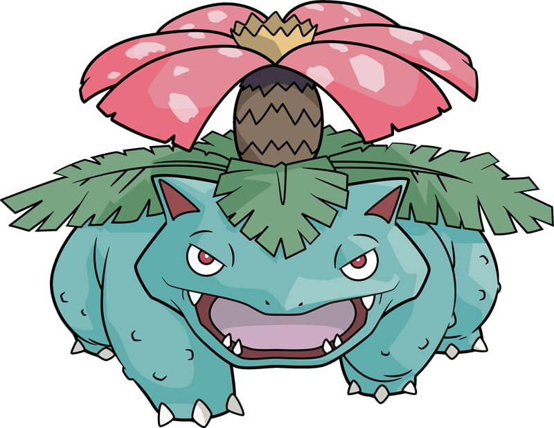

| Home | Introduction | Dictionary | Video | Map |
|  | |
| Type | Ability |
| Grass, Poison | Thick Fat |
| Height | Weight |
| 6'07" | 220.5 lbs |
Venusaur is a squat, quadruped Pokémon with bumpy, blue-green skin. It has small, circular red eyes, a short, blunt snout, and a wide mouth with two pointed teeth in the upper jaw and four in the lower jaw. On top of its head are small, pointed ears with reddish pink insides. It has three clawed toes on each foot. The bud on its back has bloomed in a large pink, white-spotted flower. The flower is supported by a thick, brown trunk surrounded by green fronds. A female Venusaur will have a seed in the center of its flower.
As Mega Venusaur, the flower on its back grows larger and two smaller pink flowers bloom, one on its forehead and one on its rear. The weight of the flower causes its legs to become sturdier in order to support it. Additional leaves with woody stems, which are supported by vines, are grown around the flower. Mega Venusaur also develops dark markings on its forehead below the new flower.
Venusaur uses its flower to catch the sun's rays to convert them into energy, which causes the flower to take on colors that are more vibrant. The flower releases a soothing scent that attracts Pokémon. This scent becomes stronger after a rainy day. In the anime, Venusaur has demonstrated the ability to manipulate nature, release several vines from its back and lead evolution ceremonies for Bulbasaur and Ivysaur. Frenzy Plant was its signature move in the past. This Pokémon is rarely found in the wild, but has been known to inhabit grasslands.